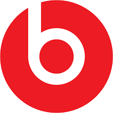

Assurance Audit Intern, EY
Gained an incredible foundation in accounting and corporate operations.

HP Tech Ventures
Explored data techniques and better understood VC firm operations.
Babson IT Technician
Immersed in tech while supporting the Babson community with solutions daily.

Beats Program
Worked on market research for a product I love as a consumer myself.
Senior Vice President, Delta Sigma Pi
Increased membership and led recruitment events with creative strategies.
Resident Assistant, Babson College
Mentored students while fostering an inclusive and supportive community.
Loyac
Launched my entrepreneurial journey by pitching my business to investors.
That-al-Salasil
Acquired well-rounded experience in a leading Gulf region bookstore.